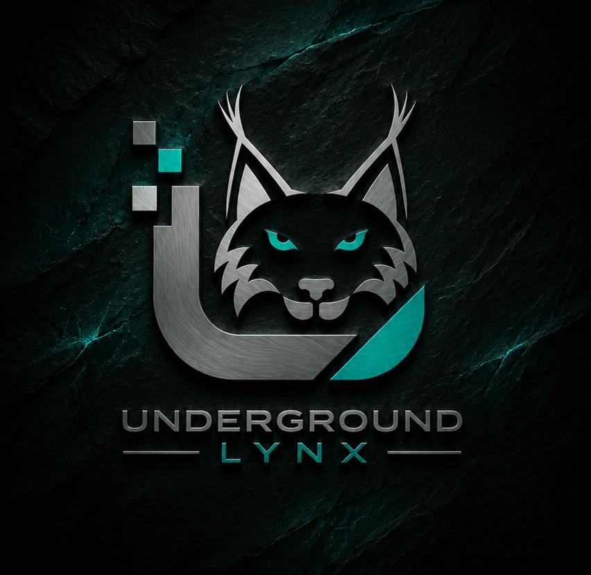

Underground Lynx
Underground Lynx
Unabhängige App-Entwicklung
Underground
Lynx
Ich entwickle Android-Apps für den Alltag. Mein erstes Projekt zählt deine Schritte und bleibt dauerhaft kostenlos und werbefrei.
Schrittzähler entdecken
Android · In Entwicklung
Schrittzähler
Setze dir ein Tagesziel und sieh auf einen Blick, wie weit du heute schon gekommen bist. Im Verlauf kannst du deine Schritte mit den vergangenen Tagen vergleichen.
- Schrittzählung auch im Hintergrund
- Tagesfortschritt als Widget auf dem Startbildschirm
- Deutsch, Englisch, Russisch und Spanisch
6.240Schritte heute
78 % von 8.000 Schritten